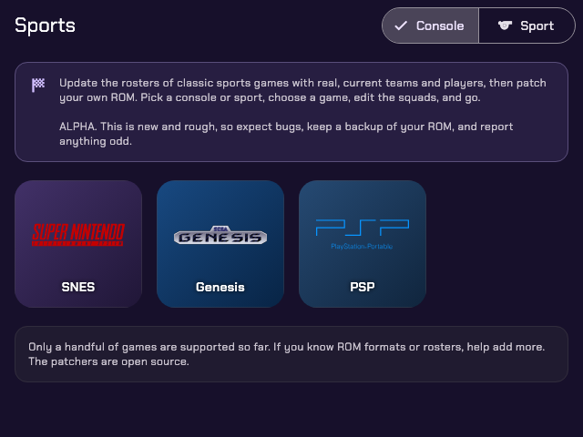
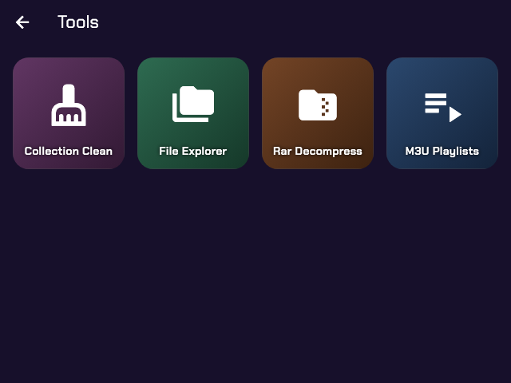
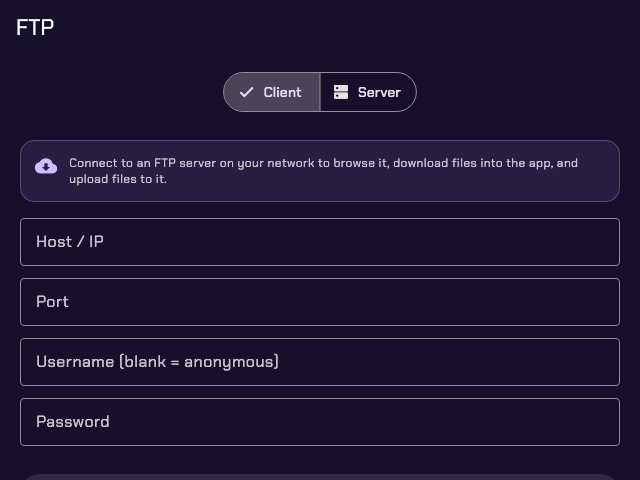

PATCH / SHARE / CONVERT / PLAY
A toolbox for people who own retro consoles and handhelds. Update classic sports games with this season's teams, move files between your devices over the network, convert and tidy your game files, and run it all on the handheld itself, with a gamepad.
Sports roster patcher · alpha
Classic sports games are stuck with the rosters of the year they shipped. Pick the game, the season and the league, check the squads, and Retro Toolbox writes current teams and players into a ROM or disc image you already own. No terminal, no Python install.
Teams and players for the season you pick. Soccer games take the league you choose, PES 2013 several at once plus the national teams, and you can add any ESPN league yourself.
Put teams in the game's slots, add or remove them, and set starters, bench, names, numbers, positions, stats and colours, with player photos and club crests.
On the games that support it, draw each club's logo and real home and away kit into the game, and replace the title and menu screens with branded art or your own PNG.
The wizard looks for the game on your device first. Zipped ROMs and multi-track .cue/.bin discs come out the way they went in.
Servers
Phone, PC, handheld, Switch or 3DS: if they're on the same network, they can trade files.
Connect to a Samba or Windows share, browse it, download files or whole folders, and upload to it.
Connect to any FTP server, or share a folder from this device so others can browse, download and upload.
Share folders over HTTP. Open them in a browser, or add them to another device's library to browse with box art and download.
A WebDAV server for JKSV: back up and restore saves both ways, straight from emulator save exports, with a backup before every replace.
Install .cia and .3ds files onto a 3DS running FBI over the network, converted to .cia when needed.
Tools
The file chores every emulation setup needs, on the device that holds the files.
Browse internal storage, SD cards and Downloads. Copy, move, zip, extract, rename and delete, with long jobs in the background.
Remove duplicate ROMs, strip region and version tags from names, and sweep out OS junk files, always previewed before it applies.
Find multi-disc games and write .m3u playlists so emulators show one entry and swap discs in-game.
Compress .cue, .gdi and .iso disc images to CHD to save space, or extract them back. chdman is bundled.
Extract .rar and .zip archives to any folder, on Android, macOS, Linux and handhelds.
Turn .nsz back into .nsp, and .3ds/.cci dumps into installable .cia, with your own keys.
Search the Steam store and write .steam shortcut files for launchers that run Steam games through GameHub or similar.
Handhelds
An ARM64 Linux build installs through PortMaster on Knulli, muOS, ROCKNIX and similar firmwares. Every screen works with the d-pad and buttons, with an on-screen keyboard for text.



Device and firmware, storage, memory, battery and temperature, the address to type into FTP or SMB, and a process list to end what's stuck.
Paste a link, or scan a QR code and send it from your phone. The file downloads in the background, resumes on retry, and archives extract in place.
About checks for a newer release and installs it. Copies installed from PortMaster's catalog update through PortMaster.
Optional
Off by default; turn it on in Settings → Games Library. It browses game files from an HTTP or HTTPS file index you provide (directory listings, JSON APIs or Internet Archive items) and downloads them in the background, with extraction, box art, search and favorites. The catalog format is in the docs.
The app hosts no games. Use only sources you have the right to use, and only download files you legally own.
Getting started
Every release ships a package for each platform.
Grab the file for your device from the latest release. On Android, allow installs from your browser.
Unzip retro_toolbox_handheld_arm64.zip into your ports/ folder and start Retro Toolbox from the Ports menu.
The home screen groups everything into Sports, Servers and Tools. Nothing to configure first.
git clone https://github.com/hiitsgabe/retro_toolbox.git
cd retro_toolbox
flutter pub get
# package the embedded Python runtime (once, and after changing python_app/)
dart run serious_python:main package python_app/ -p Android \
-r zstandard -r pycryptodome -r "retro-roster-patcher[images]>=0.4.1"
flutter build apk --release --flavor directThe fine print
prod.keys and 3DS conversion your own boot9.bin.